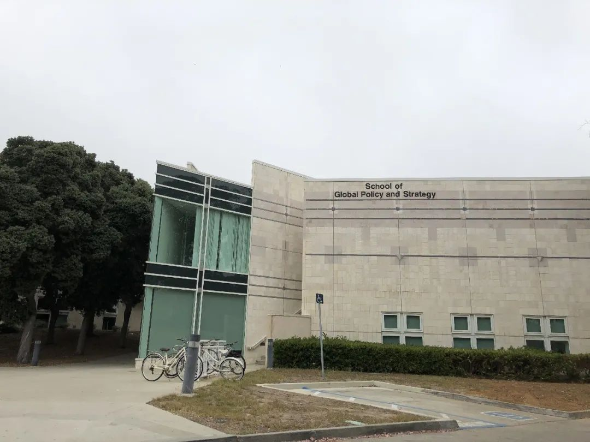
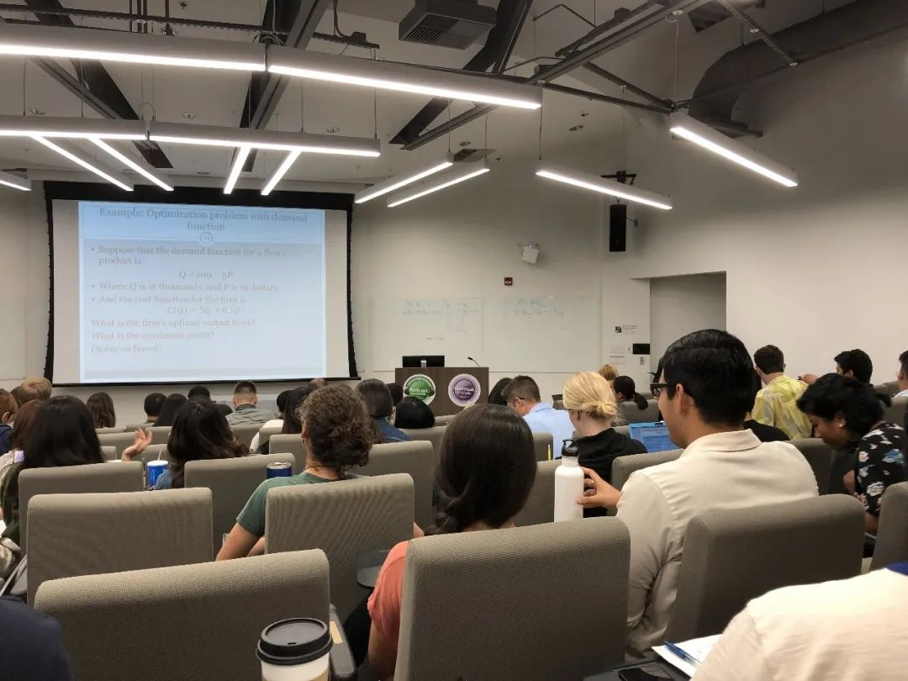

收录于合集 #留学纪实 4个

大家都知道，赴美留学，尤其是读本科和硕士，是一件很烧钱的事，每年需要花费几十万（不同的学校会有不同的浮动）。但是同时，由于美国整个高等教育体系发展很成熟，各个高校事实上能给学生提供大量的校内工作机会，其回报也是相当的丰厚，如果利用的好的话，是足以覆盖学生的日常开销的。以下是笔者基于在UCSD攻读国际事务硕士（Master of International Affairs）期间工作的经历，为大家尽量勾勒出一幅在美国高校挣钱的样貌。

文章简介
【作者】 徐垚晟
【排版】 李文博
【美编】 黄竹音
徐垚晟
一、为什么要申请助研
1、挣钱补贴家用
以我所在的加州大学圣迭戈分校为例，学校可以为学生提供大量的工作机会，包括助教、助研和其他的校园内的服务性质的工作，这里我主要是介绍助研的薪资情况，这同样适用于助教。
UCSD为在校园工作的学生提供几个不同的工资等级，每个工作等级对应不同的工资额：25%（十小时每周，$1181.68 per month）、33%（约十三小时每周，$1,470.41 per month）和49%（二十小时每周，$2363.37 per month）。其中，所谓的25%、33%和49%都是指占全职工作时长（四十小时每周）的百分比例。学校考虑到学生的主业是学习，因此限制每个学生工作时长不得超过全职的50%。大家可以看到，在工资的回报上是很丰厚的。以UCSD所在的富人小镇La Jolla为例，如果房租控制在1000刀以下每月的话（如果是研究生且申请到校内的住房，房租最低可以控制到700刀），那么每月包括房租在内的花费是至少可以被工资涵盖掉一般的。
另外，由于做助研是要和学校签订合同的，所以自身也相当于学校所雇用的员工，自然可以享受到除工资之外的其他福利，这些福利本身的价值都已经超越了工资。我主要说两项福利，一个是学费减免，一个是员工保险。UCSD规定，如果学生获得25%及以上的任用，那么每学季（UCSD是quarter制）的学费会减免50%。按照2019年秋季学费，总共是11400刀，减免一半就是5700刀，这远远超过了工资的部分。并且，学季制意味着一年在学费这块儿，就可以减免17100刀。再说员工保险，正常情况下，中国学生会因为价格太贵选择校外保险而不是学校保险。UCSD提供给研究生的学校保险是大约3000刀一年，而选择校外保险的话，比如SM，大约1300刀一年。但是，总的说来，学校的保险提供的服务更好。因此，如果成为助研，也就是学校员工，会自动获得免费的学校保险，这又是省掉了一笔很大的开销。
2、提升学术能力，丰富履历
在赴美读硕的中国学生中，有不少是将美硕作为一个学术跳板，为申请到美国的博士而做准备。那么助研的工作无疑可以为这部分同学提供一个很好的提升学术能力并丰富履历的机会。
来源：作者自摄
二、助研做什么 ****
助研的工作并不会非常的困难，往往是承担一些较为琐碎的需要许多人力投入的工作，比如整理资料并转换为文献综述和整理数据等等。就我所在的学院而言，今年暑假前发布的大部分助研岗位，都是要求学生具有数据软件操作能力（Stata，R和Python）和数据分析能力，主要是需要学生帮助老师解决掉一部分繁琐的且基础的数据问题。

来源：作者自摄
三、如何申请 ****
我是在UCSD的第一年结束之后的暑假申请助研的。我申请上这个工作是比较机缘巧合的，春季学期我选修了一位老师的课程，老师在课上介绍了一个在美国学界比较新颖的研究话题，并表示有兴趣的同学可以联系他。正好出于对这个话题的兴趣，我就在学期结束时发邮件给老师表达了感兴趣的态度，因此在暑假开始时老师邀请我进入他的一个由博士生和硕士生组成的研究小组，进行暑期的研究。

来源：作者自摄
总结一下，相比于助教岗位的多方面要求，助研岗位的申请在程序上往往更加直接，需要的是学生和老师之间建立起来的一对一联系。对于中国学生而言，优势在于可以胜任一些从事中国研究的老师的助理研究。就我所在的全球政策与战略学院（GPS）而言，有着好多的从事中国研究的杰出的学者，因此申请助研也会有一些优势（我可能比较幸运，因为尽管从事中国研究的老师有很多，但是他们中的很多人精通中文，因此并不存在那么多的中国方向的助研岗位）。
除了通过上老师的课建立申请助研的联系之外，每年暑期前，我所在的学员也会发布大量的暑期助研的岗位，往往是要求学生投递简历，最终经过老师筛选而确定。由于研究议题上可能是中国学生不熟悉的领域，所以能拿到岗位的机会并不是很高。
**
**
**
**
**
**
添加 “国小政”微信
获取最新资讯


国政学人
支持学术公益与知识传播
微信扫一扫赞赏作者 __赞赏
已喜欢，对作者说句悄悄话
取消 __
发送给作者
发送
最多40字，当前共字
上一页 1/3 下一页
长按二维码向我转账
支持学术公益与知识传播
受苹果公司新规定影响，微信 iOS 版的赞赏功能被关闭，可通过二维码转账支持公众号。